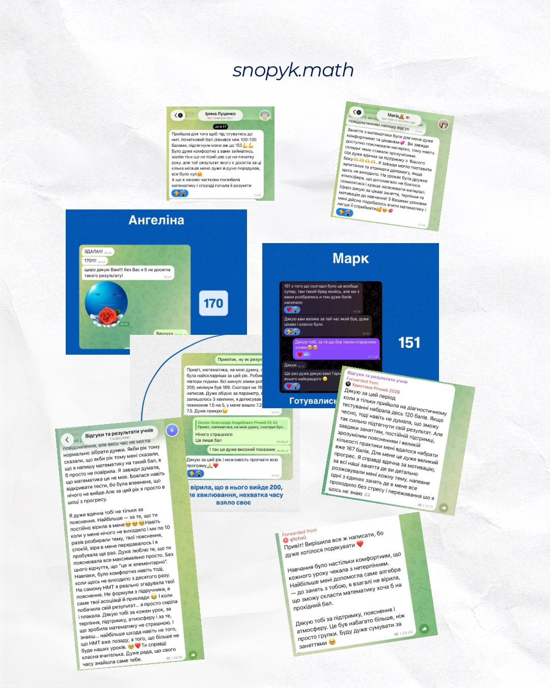

Алгебра і функції
Вирази, степені й корені, логарифми, графіки функцій, похідна — від основ до задач рівня НМТ.
Підготовка до НМТ з математики онлайн
Пройдемо всю програму за чітким планом до дати тесту, закриємо прогалини з попередніх класів і натренуємо завдання у форматі НМТ — щоб у день іспиту дитина знала, що робити, а не вгадувала.
Знайомо?
«До НМТ менше року, а прогалини тягнуться ще з 7 класу»
«Теорію ніби знає, а на тесті губиться і не встигає»
«Від балу залежить бюджет і вибір університету»
«Сам готуватися не виходить — немає системи, все вроздріб»
«У школі проходять програму, а до формату тесту не готують»
«Боїться, що в день іспиту все вилетить з голови»
Усе це вирішується системою: зрозуміти, що вже є, скласти план до дати тесту і регулярно тренуватися у форматі НМТ.
Що входить у підготовку
Вирази, степені й корені, логарифми, графіки функцій, похідна — від основ до задач рівня НМТ.
Лінійні, квадратні, раціональні, показникові, логарифмічні, тригонометричні і їхні системи.
Планіметрія і стереометрія: фігури, площі, об'єми, координати і вектори.
Відсотки, пропорції, рух і робота, комбінаторика, ймовірність і статистика.
Усі типи завдань НМТ: як читати умову, як не загубити бали на дрібницях і як перевіряти себе.
Тренуємось розподіляти час, щоб устигнути все і не застрягти на одному завданні.
Як готуємось
На першому уроці бачимо, що дитина вже вміє і де прогалини — з усіх класів, не лише з 11-го.
Розписуємо теми по тижнях так, щоб устигнути все і мати час на повторення перед тестом.
Пояснюємо тему, відпрацьовуємо на завданнях формату НМТ, даємо домашні для закріплення.
Ви бачите, що пройшли, що вже виходить і над чим працюємо далі — без сюрпризів наприкінці.
Коли починати
Ідеально: спокійно проходимо всю програму, закриваємо прогалини і маємо кілька місяців на тренування.
Інтенсивніше: фокус на темах, які найчастіше трапляються в тесті, і на типових помилках дитини.
Рятуємо бали: найважливіші теми, тактика тесту і робота на час, щоб упевнено набрати максимум можливого.
Результати
Відео та фото-відгуки від учнів і батьків — гортайте стрічку, щоб побачити всі.

Хто готує
Математик за освітою, викладаю 9 років. Сама складала ЗНО з математики на 189 балів, тож знаю тест не лише як викладач, а й зсередини. За цей час підготувала понад 150 учнів.
Ціни
Урок триває 55 хвилин. Формат і кількість занять на тиждень радимо після діагностики.
від 550 грн / урок
Найшвидший шлях: план і темп повністю під одного учня.
від 450 грн / урок
Готуватися разом з другом чи однокласником. Ціна за одного учня.
від 300 грн / урок
До 6 учнів, які готуються до НМТ. Ціна за одного учня.
FAQ
Не знайшли відповідь? Напишіть нам у Telegram — відповімо особисто.
Написати в TelegramНайкомфортніше — за 9 місяців і більше: устигаємо пройти всю програму і потренуватися. Але почати можна будь-коли: за 3–6 місяців фокусуємось на найважливіших темах і тактиці тесту.
Найчастіше — 1–2 заняття на тиждень. Точну кількість радимо після діагностики: вона залежить від рівня, мети і того, скільки часу лишилось до тесту.
Так. Починаємо з прогалин попередніх класів, на яких тримається програма НМТ, і поступово переходимо до завдань формату тесту. Головне — почати вчасно.
Так, після кожного уроку — завдання для закріплення у форматі НМТ. Без практики між заняттями тема швидко забувається.
Ми надсилаємо батькам звіти: що пройшли, що вже виходить і над чим працюємо далі.
Індивідуальний урок — від 550 грн, у парі — від 450 грн, у міні-групі до 6 учнів — від 300 грн з учня. Урок триває 55 хвилин.
Це перше заняття онлайн: визначаємо рівень, знаходимо прогалини, обговорюємо мету й бажаний бал і складаємо план підготовки. Після неї ви самі вирішуєте, чи продовжувати.
Запис на діагностику
Підберемо зручний час для діагностики — першого уроку, на якому визначимо рівень і складемо план.